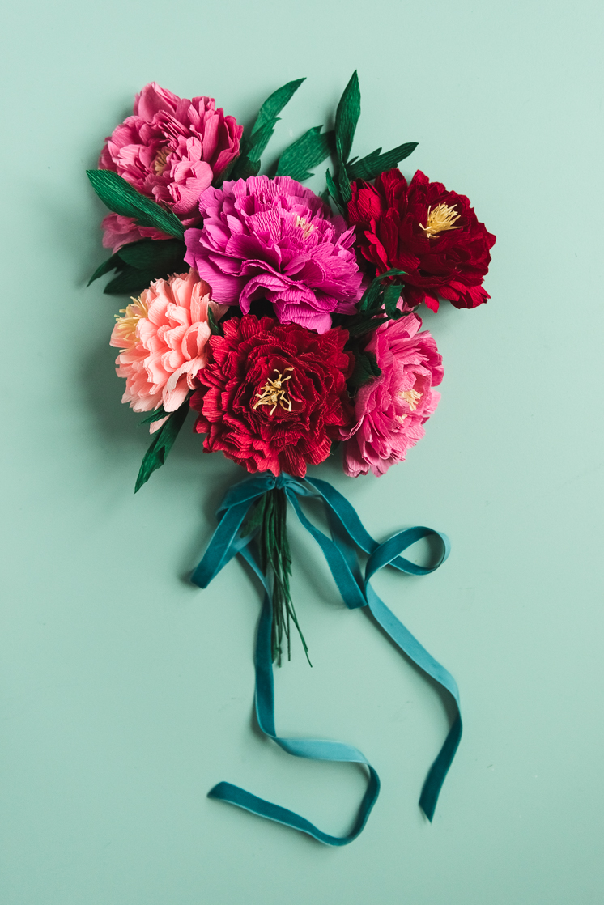

This craft is definitely perfect for parties, proms, and wedding. It will bring life to the place and you can put them in a table. It easy to make and you won't need to spend a huge amount of money for a peony. You may reuse it because unlike real peony this DIY Paper Peony will not rot. Make any party pleasant with this great DIY!